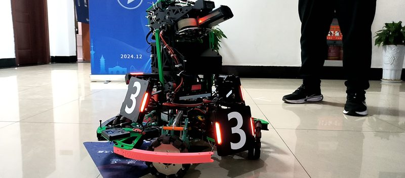

3V3 非甲级对抗赛三等奖
RoboMaster 2025 步兵机器人
主导步兵机器人机械系统方案设计，完成全向轮底盘、Yaw/Pitch 云台传动与整机布局；负责零部件采购、外发加工、装配交付与赛前改进。
查看详情Projects
四段竞赛经历，从步兵机械结构、ROBOCON 电控与运动控制，到西门子杯硬件设计与 RoboMaster 赛场联调。
作为 ROBOCON 电控组组长获障碍赛全国二等奖、任务赛全国三等奖；作为西门子杯硬件负责人获全国初赛一等奖。
参与 3V3 非甲级对抗机器人研发与赛场联调，围绕机构装配、系统适配和现场问题排查推进整机交付，获江苏站一等奖。
担任步兵组机械组长，主导全向轮底盘、Yaw/Pitch 云台传动与整机结构布局，获 3V3 非甲级对抗赛三等奖。
参与校内科技活动组织与技术交流，协助成员培养和项目活动执行，参与学校科创成果展示。
从零参与机器人战队和社团建设，推动机械、电控与算法方向的人员组织、项目分工和训练流程落地；参与新生培养与技术传承。
就读邮政工程本科，确定机器人与嵌入式方向，开始系统补齐机械、电控与控制基础。
Awards
竞赛奖项与阶段性成果。
Stack
从机械结构、嵌入式硬件到运动控制与仿真，这些是我在项目中实际使用的工具和方法。